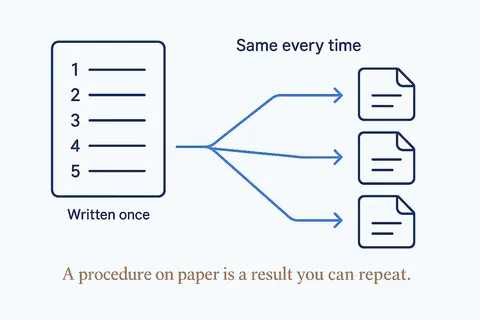
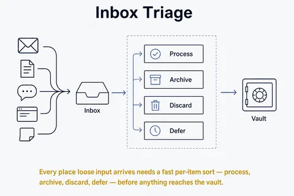
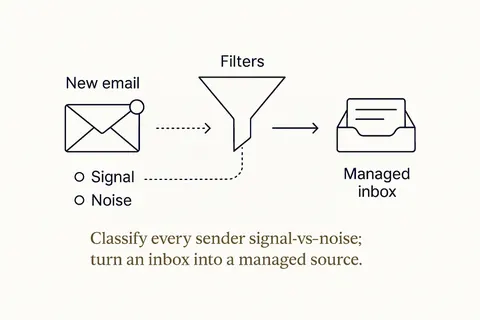
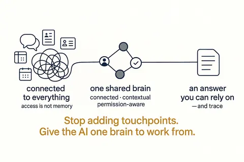
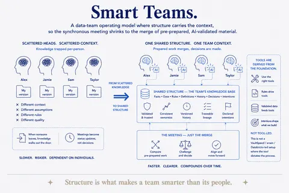
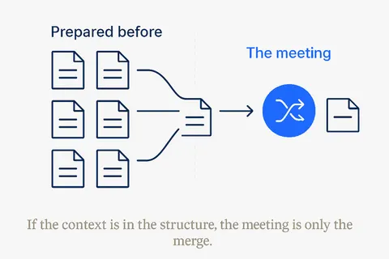

The business OS
The components every small company runs on — accounting, email, CRM, documents, assets — and how to own them. 7 concepts; each opens its full page in its own library.

 Document VaultPlain files in a deliberate shape that both you and AI can navigate.Structure Beats Magic →
Document VaultPlain files in a deliberate shape that both you and AI can navigate.Structure Beats Magic →
RunbooksA repeatable procedure written down so a task is done the same way every time.Structure Beats Magic →
Inbox TriageEvery place loose input arrives needs a fast per-item sort — process, archive, discard, defer — before anything reaches the vault.Structure Beats Magic →
Email IntelligenceClassify every sender signal-vs-noise; turn an inbox into a managed source.Structure Beats Magic →
Company BrainThe org-scale second brain: shared, structured, permission-aware knowledge AI can rely on. Wiring tools together isn't it — access is not memory.Structure Beats Magic →
Smart TeamsA data-team operating model where structure carries the context, so the synchronous meeting shrinks to the merge of pre-prepared, AI-validated material.Structure Beats Magic →
The Meeting Is Just the MergeStructure carries the context, so the meeting is only where prepared work merges.Structure Beats Magic →Everything on this topic → (use cases, articles, resources)
Other categories: Design thinking and small experiments · From proof of concept to something you rely on · Vibe coding practices that hold · Data, rules and structure first · Build, buy or rent · Privacy and control · Building your own data models · Components and building blocks